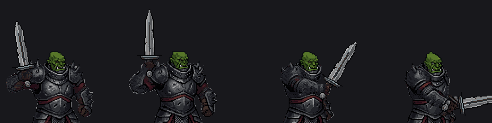
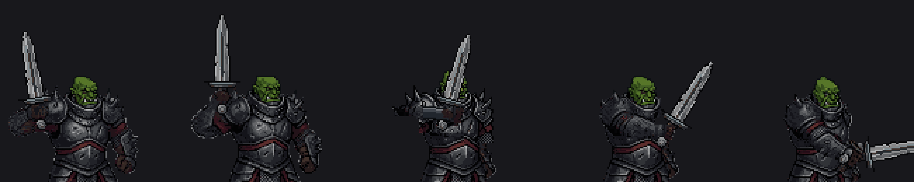
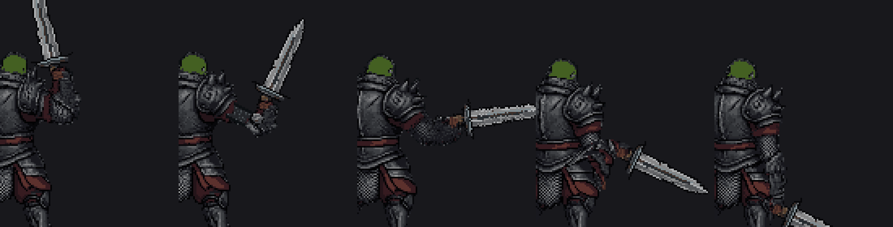
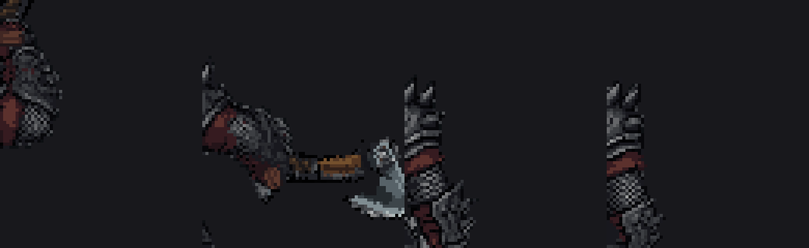
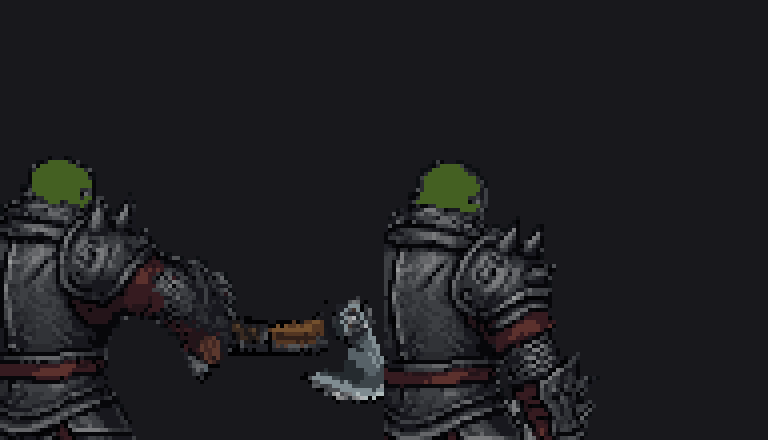
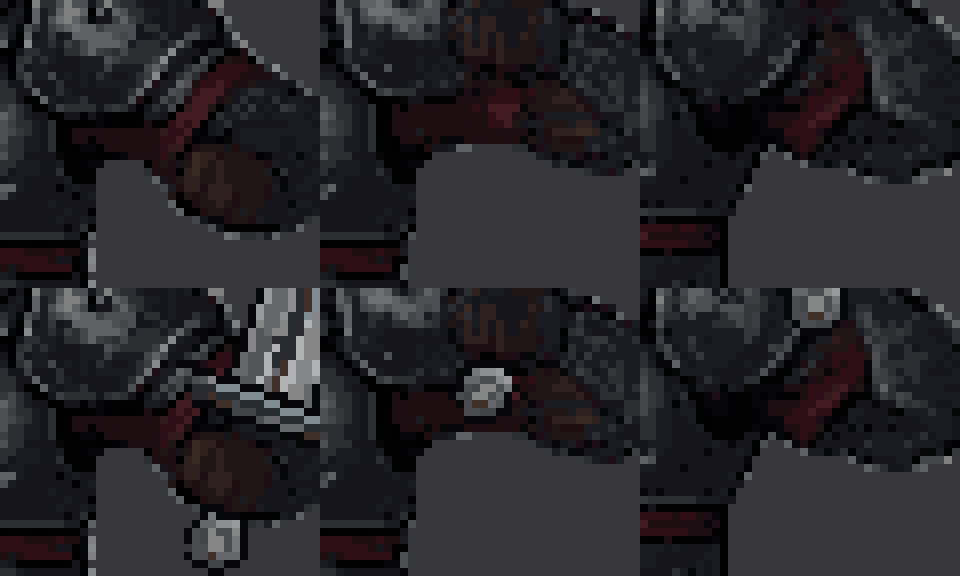
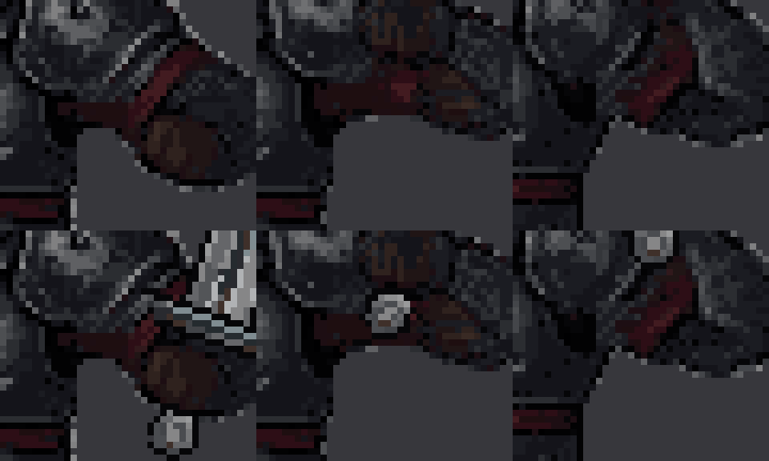
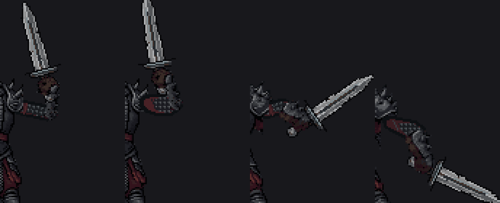
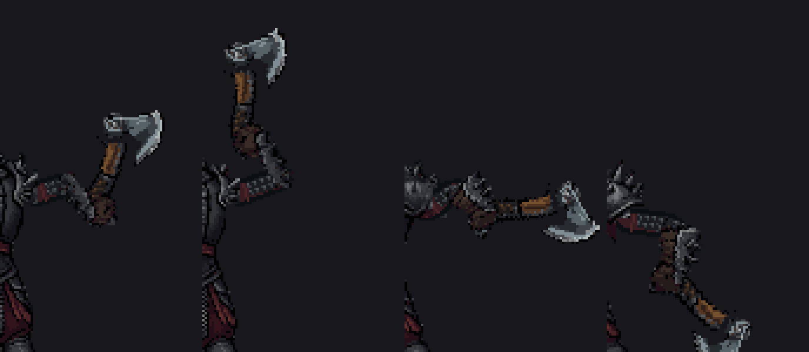

Recortes com ampliação inteira (nearest-neighbour), sem nenhuma alteração de pixel. Servem para julgar regiões pequenas demais no tamanho nativo de 128×128.
Era isto o "flash": a lâmina passava do ápice vertical direto para a diagonal do outro lado, num único quadro, com 36 px de vão vazio entre as duas posições. Agora existe um quadro de descida autorado entre eles.


apex-hold.
back_r/Sword F05 → F09 depois da equalização. A espicada de 57,9 px na entrada do
contato virou 36,2 px, e o platô da descida agora bate com o frontal: 42,3 · 38,1 · 36,2 · 37,7
contra 38,2 · 37,9 · 37,8 · 36,2.



rgb(27,28,34) e rgb(43,45,49).
Nenhum canal RGB diminuiu em nenhum pixel; contorno externo, alfa, tecido vermelho e highlights intactos.
F00–F02 e F06–F12 permanecem 100% idênticos ao V7.
back_l/Sword F04 → F07: descida predominantemente vertical, sem travessia lateral
(Δy 93 px contra Δx 34 px).
back_l/Axe F03 → F06: mesma leitura de verticalidade, com peso próprio de machado.O machado ainda tem um vão de 22–24 px entre coil e cleave
(F04→F05), nas quatro direções. Não foi tratado nesta rodada porque a queixa era a espada, e a
solução é a mesma: autorar um quadro de descida e pagá-lo dividindo o quadro anterior. Fica como
o próximo candidato natural.
Nas traseiras, o primeiro passo (F02→F03) ainda difere do frontal em torno de 100% em
back_r (34,6 px contra 16,5 px) e o último passo é mais curto (8,9 px contra 22,0 px).
É entrada e acomodação, não a descida — a descida está equalizada.
| Família | Quadros | Total | Impacto | Maior passo |
|---|---|---|---|---|
| Sword (4 direções) | 14 | 730 ms | F08 · 325 ms · 44,52% | F05→F06, 36,9–42,3 px |
| Axe (4 direções) | 12 | 1005 ms | F06 · 410 ms · 40,80% | F04→F05, 73,7–89,9 px |
Nenhum pixel foi alterado por esta página. Ela é só recorte e ampliação.